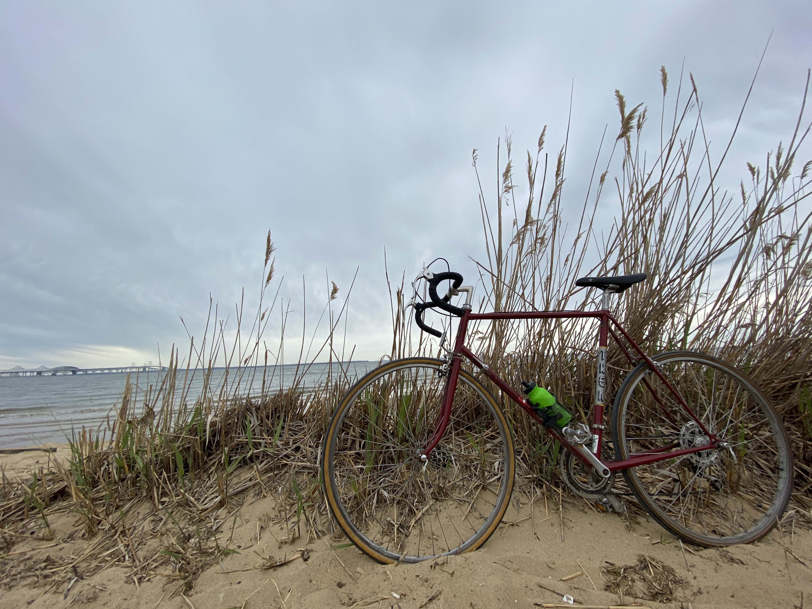
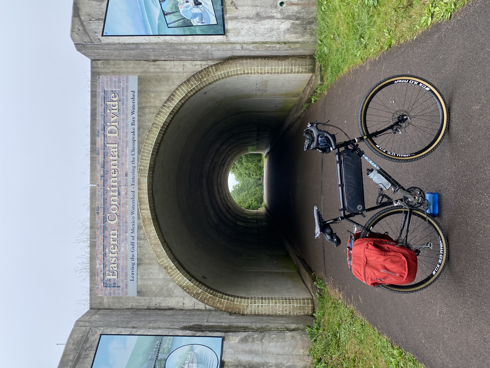
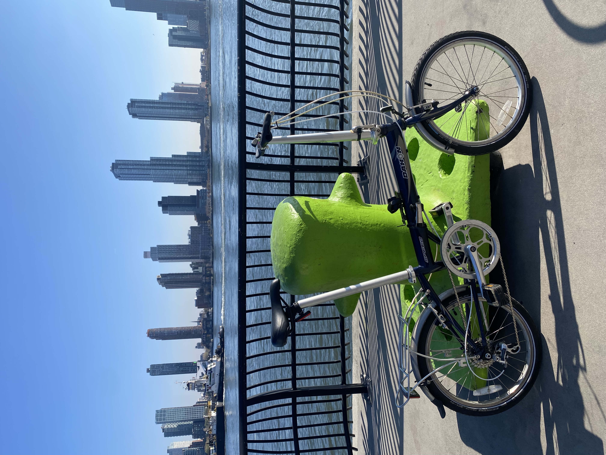

Bikes
- 1982 Trek 515 
- 2018 Soma Wolverine v3.0 
- 201X Dahon Speed D7 
- 2023 VeloOrange Pass Hunter
- Closed off Beach Drive (10 mi roundtrip)
- Rock Creek Park-Capital Crescent NW DC Loop (20 mi loop)
- Rock Creek Park-Anacostia River Trail DC Loop (35 mi loop)
- C&O Canal (185 mi one way)
If you like functional, utilitarian bikes, cobbled together using methods other than those recommended by large companies, you've come to the right place!
Bikes I Own
Bikes I've Built
Routes I Enjoy
If you're interested in seeing where I've been biking since 2020, check out my heatmap.
Otherwise, below are some of my favorite routes around DC.